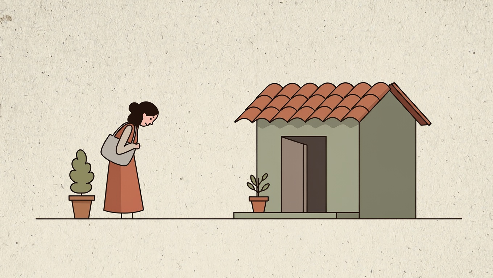
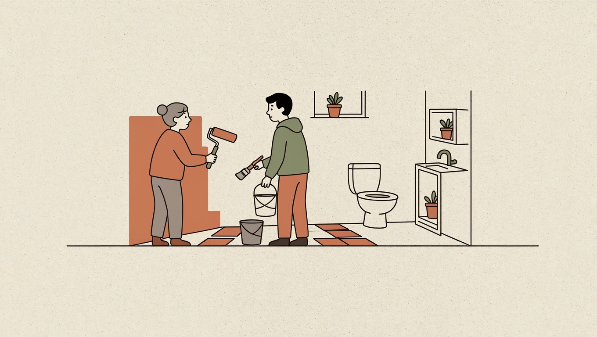
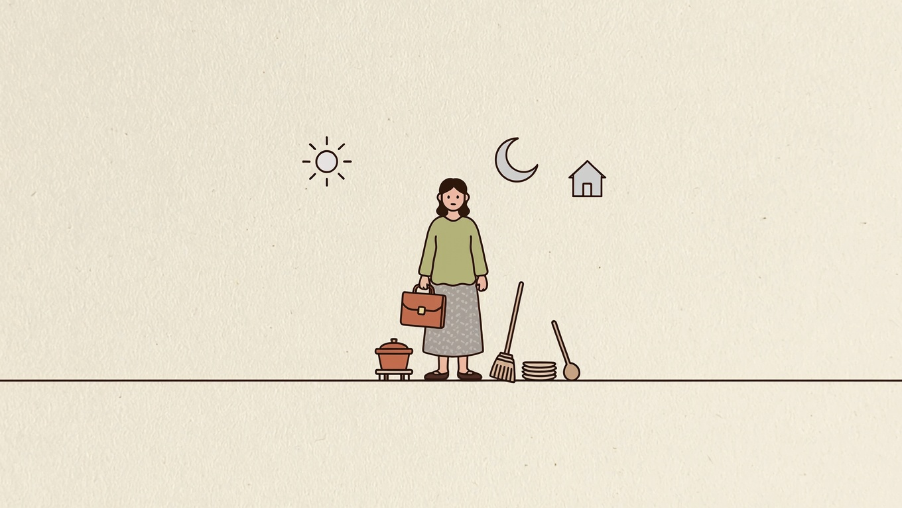
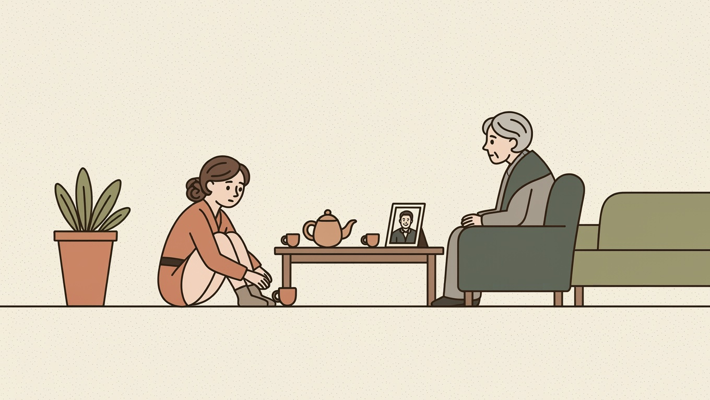
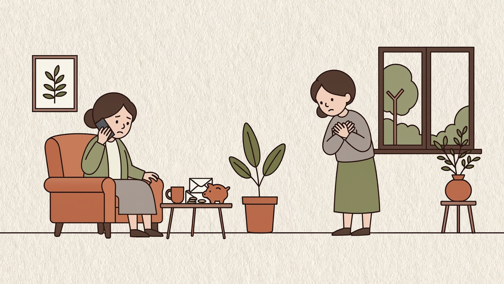
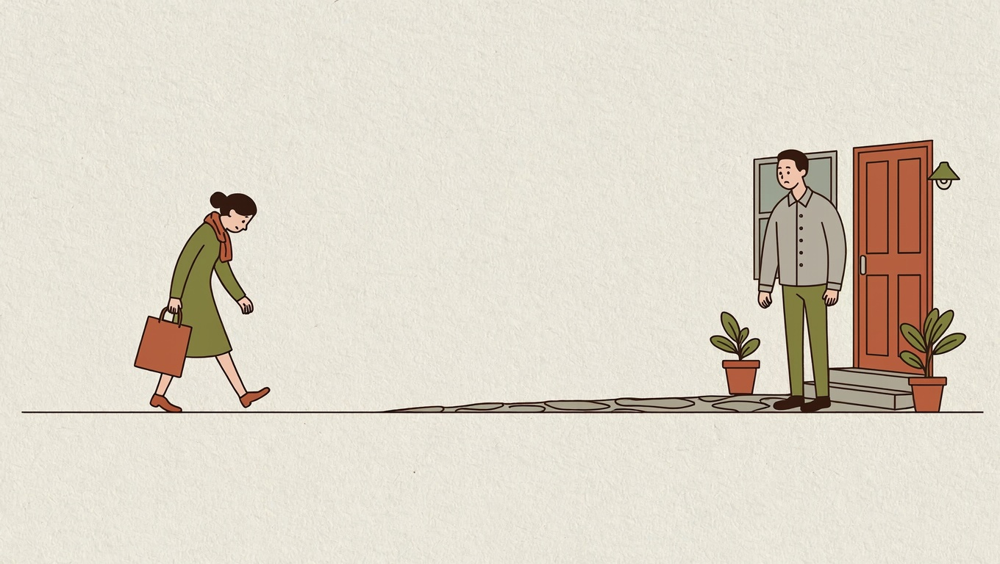
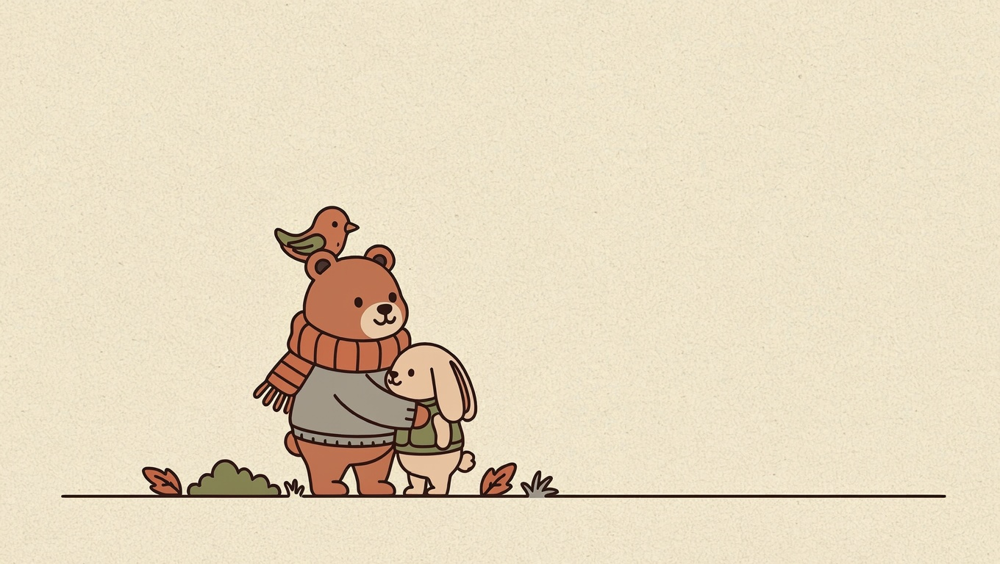

Bỏ gần hết tiền tiết kiệm để sửa nhà cho mẹ chồng dù mới về làm dâu nửa năm

Tôi mới kết hôn chưa lâu mà mỗi ngày về nhà đều thấy nặng nề, không dám than thở với chồng, sợ anh khó xử.

Tôi mới kết hôn chưa đầy sáu tháng mà mỗi ngày về nhà là cảm thấy nặng nề trong lòng, không dám than thở với chồng vì sợ anh khó xử giữa mẹ và vợ.
Trước khi cưới, tôi sống cùng bố mẹ trong căn nhà gia đình xây từ lâu.
Sau đám cưới, bố mẹ trao cho tôi một khoản tiền để sửa sang lại nhà cửa, vừa cho vợ chồng có chỗ ở khang trang, vừa làm vốn dự phòng.
Tôi hiểu đó là tình thương của cha mẹ con gái nên muốn dùng thật hợp lý.
Ban đầu mẹ chồng nói căn nhà cũ, chỗ này chưa đẹp, chỗ kia chưa tiện.
Tôi nghe cũng không ngại bỏ tiền sửa.

Hết thay nền, sơn tường, mua nội thất, đến sửa thêm phòng bếp, nhà vệ sinh.
Mỗi lần mẹ đề nghị, tôi đều đáp ứng vì nghĩ mẹ già rồi, bà thoải mái thì gia đình vui.
Không ngờ việc sửa nhà không có điểm dừng, mẹ luôn tìm ra chỗ chưa vừa ý mà muốn thay đổi tiếp.
Cả quá trình chi phí do tôi gánh alone, bà không đóng góp một xu.
Trước khi lấy chồng, tôi được bố mẹ chiều chuộng, giặt giũ, rửa bát, dọn dẹp đều có người giúp.
Từ ngày về làm dâu, tôi gần như gánh hết.

Ban ngày đi làm, tối về tất bật việc nhà.
Có hôm vừa chân vào cửa đã nghe mẹ nhắc việc này chưa làm, việc kia chưa xong.
Dù cố gắng đến đâu vẫn không được một lời ghi nhận.
Nấu món này bà chê mặn, món kia bảo không hợp khẩu vị.
Có hôm đang rửa bát chưa kịp quét nhà, bà đã cầm chổi vừa quét vừa nói bóng gió con dâu bây giờ thế nọ thế kia, chẳng biết chăm sóc gia đình.
Tôi thường mua trái cây ép nước để sẵn tủ lạnh cho mẹ uống, nhớ món bà thích để thỉnh thoảng nấu đổi bữa.

Thế nhưng mọi cố gắng như vô nghĩa, tôi lúc nào cũng phải đoán hôm nay bà muốn gì, sợ việc nhỏ không vừa ý cũng khiến bà nổi giận.
Chồng tôi thường đi công tác dài ngày, vài tháng mới về lần.
Tôi không muốn anh lo nên chuyện gì cũng chịu đựng, ít khi kể.
Tôi nghĩ nhẫn nhịn, đối xử tốt thì bà sẽ hiểu và thương.
Thực tế hoàn toàn khác, sau gần sáu tháng chung sống, tiền bố mẹ cho đã gần hết, riêng sửa nhà tiêu tốn gần ba trăm triệu.
Chi tiêu sinh hoạt hàng ngày từ điện nước, thực phẩm đến vật dụng tôi tự lo, mẹ không chủ động đóng góp.

Một hôm vô tình nghe mẹ gọi điện cho chồng, bà than tôi là con dâu mà chẳng biết quan tâm mẹ chồng, sống chung nhà mà không chăm sóc bà chu đáo.
Nghe lời ấy, tôi vừa tủi thân vừa uất ức.
Tiền sửa nhà tôi bỏ, tiền sinh hoạt tôi lo, việc nhà tôi làm; mà cuối cùng trong mắt bà, tôi vẫn là người con dâu vô tâm.
Nhiều lúc nhớ bố mẹ đến phát khóc.
Cha mẹ cả đời vất vả, dành dụm từng đồng lo cho con gái, chưa bao giờ đòi hỏi trả ơn hay than phiền khi giúp đỡ.
Mà chỉ sau vài tháng làm dâu, tôi đã gần như tiêu hết số tiền bố mẹ cho, trong khi tinh thần ngày càng mệt mỏi.

Tôi mới kết hôn chưa lâu mà mỗi ngày về nhà đều cảm thấy nặng nề.
Tôi không dám than thở với chồng vì sợ anh khó xử, cũng chẳng biết mình nhịn được đến bao giờ.
Tôi lấy chồng là bắt đầu cuộc sống mới, có thêm gia đình để yêu thương gắn bó.
Vậy mà giờ đây, tôi chỉ thấy mệt mỏi, cô đơn và ngột ngạt.
Tôi phải làm sao đây, mong các bạn chia sẻ cùng tôi.

Cảm ơn bạn đã lắng nghe.
Nguồn: Bài gốc